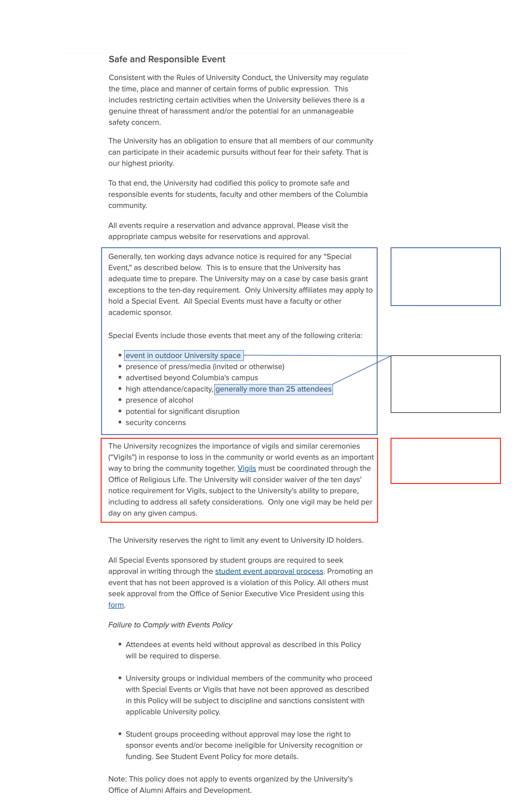
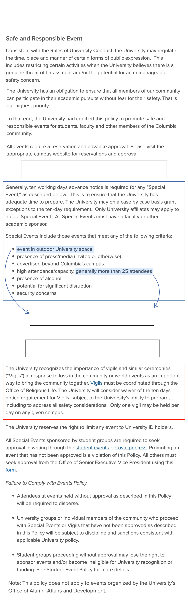
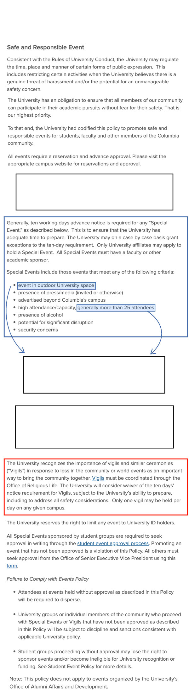
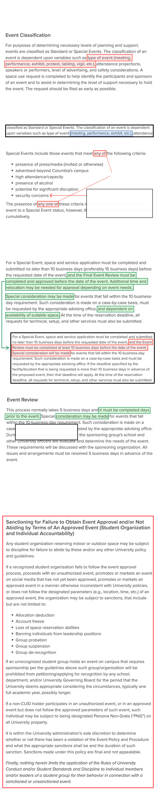
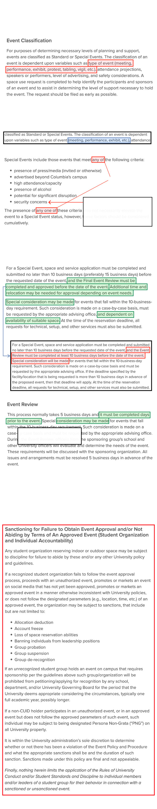

Spectator reviewed the University Event Policy and the Student Group Event Policy and Procedure webpages using Wayback Machine, a digital internet archive, as they appeared on June 12, the last time Wayback Machine recorded the site prior to the SJP and JVP suspensions.
As of Friday, the current versions of the webpages included several additions and alterations to the earlier versions.
Undergraduate Student Life was asked to circulate the “updated” policies and shared them with several student governing bodies on Oct. 25, according to an email that seven student leaders with direct knowledge of the matter provided to Spectator. USL sent another email on Nov. 7 asking the governing bodies to “Re-read the updated (as of October 24) University Event Policy and Student Group Event Policy and Procedure and the Vigil Policy, which outline university policy and timelines.”
The update came less than two weeks after the Oct. 12 protests.
In the emails, the updates to the policy webpages were one of several announcements made to the governing bodies. Barnard’s Student Government Association and the Club Sports Governing Board were not notified of the updates, student leaders from the organizations told Spectator.
USL’s Oct. 25 email reiterated a 10-business-day requirement for approving on-campus events and reminded students that some events will require an event review, special event approval, or additional logistical coordination. Its Nov. 7 email specifically cited the “Sanctioning for Failure to Obtain Event Approval and/or Not Abiding by Terms of An Approved Event (Student Organization and Individual Accountability),” which was not part of the previous version of the webpage, as “especially important.” The email emphasized that “individuals and unrecognized groups do not have the ability to reserve space on-campus.”
In a statement to Spectator, a University official wrote that the “special events process is not new” and that in the days after Hamas’ Oct. 7 attack, “faced with intense emotions on all sides and urgent demands for many events,” including vigils and protests, “the University felt an obligation to restate and clarify these policies as clearly as possible to make sure there would be no misunderstanding of them.”
“The restatement also specified potential sanctions should there be a policy violation,” the University official added. “Student advisers worked with the affected student groups, including Students for Justice in Palestine and Jewish Voice for Peace, to make them aware of these policies and how they would apply prospectively to upcoming events.”
The University official wrote that the Special Events Policy “restatement” also clarified the University’s vigil policy, which they wrote gives vigils “more flexibility than large-scale protests, which typically raise greater safety concerns.”
“We are committed to preserving an environment in which debate and protest are encouraged and protected,” the University official wrote. “That requires having processes and procedures to preserve the safety of our campuses and enforcing those requirements consistently for all groups, regardless of the views being expressed.”
It was not immediately clear whether the policies highlighted in the “restatement” to which the University official referred had been made public prior to the Oct. 24 webpage updates.

Reiterated in the Oct. 25 USL email; mentioned on the Student Group Event Policy and Procedure webpage.
These details are not mentioned on the Student Group Event Policy and Procedure webpage.
The update also clarified vigil policies, and linked to a separate website on vigil policies.

Reiterated in the Oct. 25 USL email; mentioned on the Student Group Event Policy and Procedure webpage.
These details are not mentioned on the Student Group Event Policy and Procedure webpage.
The update also clarified vigil policies, and linked to a separate website on vigil policies.

Reiterated in the Oct. 25 USL email; mentioned on the Student Group Event Policy and Procedure webpage.
These details are not mentioned on the Student Group Event Policy and Procedure webpage.
The update also clarified vigil policies, and linked to a separate website on vigil policies.
Updates to the University Event Policy webpage
Columbia holds the power to suspend groups, temporarily cutting off their access to funding and eligibility to hold on-campus events, as it did to SJP and JVP. But the power to sanction groups—including derecognition—is “unprecedented” and “by no means a power the University has had in the past,” Cody Baynori, CC ’23, Student Governing Board chair for the 2022-23 academic year, said.
The updated Student Group Event Policy and Procedure webpage states that Columbia can sanction student organizations and their members under the Rules of University Conduct and Student Standards and Discipline.
The University’s ability to sanction individual members of organizations was “something that I have never heard of happening in the past,” Baynori said.
“They’ll only compromise with students insofar as it reflects their own ideologies, and the minute … students step out of line and begin raising their voices for something that doesn’t reflect the institution’s beliefs, that’s when the other shoe drops, and that’s when they’re walking back from the so-called compromises that they had pretended to give us,” Baynori said. “So that’s a little bleak.”
SJP and JVP are recognized under the Student Governing Board, which oversees “spiritual, ideological, political, humanitarian, cultural, or activist” groups, according to its website. SGB holds the jurisdiction to hear complaints regarding its member organizations that “relate to violation of University rules,” according to Section 1 of SGB’s judiciary process.
SGB’s constitution gives its executive board judiciary power to “adjudicate disputes between and within groups, review complaints received in writing, and take disciplinary action when required.” USL’s Nov. 7 email affirmed SGB and the Activities Board at Columbia’s authority to adjudicate alleged policy violations and wrote that “individual students may be referred to the University Rules administrator or to the individual student’s school Conduct process.”
An additional section on the current version of the University Event Policy webpage, titled “Safe and Responsible Event,” specifies Columbia’s power to restrict “certain activities when the University believes there is a genuine threat of harassment and/or the potential for an unmanageable safety concern.”
A subsection of that new addition, titled “Failure to Comply with Events Policy,” reads that groups or individuals that breach the policy “will be subject to discipline and sanctions consistent with applicable University policy.”
“Student groups proceeding without approval may lose the right to sponsor events and/or become ineligible for University recognition or funding,” the addition reads.
Rosberg linked to the University Event Policy in his email announcing SJP and JVP’s suspension, effective through the end of the fall term.
Updates to the Student Group Event Policy and Procedure webpage
The current version of the Student Group Event Policy and Procedure webpage includes an additional section titled “Sanctioning for Failure to Obtain Event Approval and/or Not Abiding by Terms of An Approved Event (Student Organization and Individual Accountability).”
“It is within the University administration’s sole discretion to determine whether or not there has been a violation of the Event Policy and Procedure and what the appropriate sanctions shall be and the duration of such sanction,” the section reads. “Sanctions made under this policy are final and not appealable.”
Student organizations and individual members of organizations may be subject to sanctions that include but are not limited to: allocation deduction, account freeze, loss of space reservation abilities, banning individuals from leadership positions, group probation, group suspension, and group derecognition.
“Finally, nothing herein limits the application of the Rules of University Conduct and/or Student Standards and Discipline to individual members and/or leaders of a student group for their behavior in connection with a sanctioned or unsanctioned event,” the policy reads.

The June 12 version of the policy text did not include protests, tabling, and vigils as examples of event types.
The current version omits “on the part of the recognized student group, advisers, or guest”
The Event Classification and Event Review sections saw the brunt of the updates.
Changed from “10 days prior to the event”
Newly introduced in the update was the section below on sanctions student organizations may face for failing to “abide by these and/or any other University policy and guidelines.”

The June 12 version of the policy text did not include protests, tabling, and vigils as examples of event types.
The current version omits “on the part of the recognized student group, advisers, or guest”
The Event Classification and Event Review sections saw the brunt of updates.
Changed from “10 days prior to the event”
Newly introduced in the update was the section below on sanctions student organizations may face for failing to “abide by these and/or any other University policy and guidelines.”

The June 12 version of the policy text did not include protests, tabling, and vigils as examples of event types.
The current version omits “on the part of the recognized student group, advisers, or guest”
The Event Classification and Event Review sections saw the brunt of the updates
Changed from “10 days prior to the event”
Newly introduced in the update was the section below on sanctions student organizations may face for failing to “abide by these and/or any other University policy and guidelines.”

The June 12 version of the policy text did not include protests, tabling, and vigils as examples of event types.
The current version omits “on the part of the recognized student group, advisers, or guest”
The Event Classification and Event Review sections saw the brunt of updates.
Changed from “10 days prior to the event”
Newly introduced in the update was the section below on sanctions student organizations may face for failing to “abide by these and/or any other University policy and guidelines.”
The previous version of the Student Group Event Policy and Procedure webpage defined “Special Events” as events that create “security concerns on the part of the recognized student group, advisers, or guest.” The current version does not include the language following “security concerns.” Events posing potential security concerns may be reviewed by “the appropriate advising office or officers from the sponsoring group’s school,” the current webpage reads.
For these “Special Events,” the updated webpage states that “space and service application must be completed and submitted no later than 10 business days (preferably 15 business days) before the requested date of the event.” A previous version of the webpage did not include the 15 business days preference.
Per the updated webpage, a non-Columbia ID holder who participates “in an unauthorized event, or in an approved event but does not follow the approved parameters of such event,” may be barred from entering campus in the future.
If an alleged University policy violation falls outside of the purview of a governing board, it is referred to the Student Group Adjudication Board, a group composed of five or six representatives from the SGB, Activities Board at Columbia, General Studies Student Council, Columbia College Student Council, and the Engineering Student Council, according to the board’s USL webpage.
The Student Group Adjudication Board holds several sanctioning powers, according to the board’s USL webpage, including but not limited to allocation deduction, account freeze, loss of space reservation abilities, banning individuals from leadership positions, group probation, group suspension, and group derecognition.
Those same sanctions are under Columbia’s “sole discretion,” according to the current version of the Student Group Event Policy and Procedure webpage. A previous version of the webpage did not list those sanctioning powers.
An organization can appeal the Student Group Adjudication Board’s decision on its alleged policy violation. However, according to the updated Student Group Event Policy and Procedure webpage, Columbia’s decisions are “final and not appealable.”
‘A betrayal of Columbia’s values’
The Special Committee on Campus Safety has been meeting at least once per day since Oct. 7, a University spokesperson told Spectator last Friday.
Chaired by Rosberg, who signed the announcement of SJP and JVP’s suspension, the committee includes representatives from Public Safety, University Life, Communications, and the Offices of the President, Provost, and General Counsel, according to the University spokesperson. It does not include students or faculty, making it insular to members of administration, according to a tenured faculty member with knowledge of the situation.
Morningside campus access has been restricted to Columbia ID holders five times since Oct. 12 in anticipation of planned protests on campus. The University has also increased its New York City Police Department and Public Safety presence.
“Our campus has been operating in a highly charged atmosphere where safety concerns are real, not theoretical,” the University official wrote. “The University has heard from many students – Jewish, Palestinian, Arab, Muslim and many others – that they feel unsafe on campus, especially during protest activity. Many of these events may attract persons who are not members of our own community, which heightens safety concerns.”
In a statement to Spectator, General Studies Student Council President Nasser Odetallah, GS ’24, expressed his concern with the lack of transparency regarding the formation of the Committee.
“My personal feelings about the specific groups in question aside, I will say, as a student leader on campus, I am troubled by the idea that there is now a new Committee in the administration that, with little notice, has superseded the normal violations process and has begun suspending student groups,” Odetallah wrote. “I worry about the precedent this is setting and the misusage of this power moving forward when it comes to student activities.”
The executive committee of the Columbia chapter of the American Association of University Professors, made up of five Columbia faculty members, sent a letter to senior administration on Wednesday raising concerns about the changes to the Student Group Event Policy and Procedure and University Event Policy webpages. The faculty members questioned who wrote and approved the updated language in the sanctioning procedures.
“This series of actions flagrantly contravenes University rules and procedures,” the faculty members wrote. “We call upon the senior administration to recommit to shared faculty governance, and to nullify improperly authorized committees, actions, and policies that circumvent channels of governance at the University and the core principle of free speech.”
David Lurie, a professor of Asian humanities and associate professor of Japanese history and literature who sits on the committee that wrote the letter, said in an interview with Spectator that the policy changes “portend a very significant deterioration in the already unduly limited ability of the faculty and students to have a voice in decisions that are being made at every level of the University.”
Lurie is one of many faculty members raising concerns regarding free speech and transparency on campus following the suspension of SJP and JVP. He cited the Rules of University Conduct, which includes a statement defending freedom of expression.
“Although the University values the civil and courteous exchange of viewpoints, it does not limit discussion because the ideas expressed might be thought offensive, immoral, disrespectful, or even dangerous,” the rules read. “We expect that members of our community will engage in public discussions that may confront convention, and free expression would mean little if it did not include the right to express what others may reject or loathe.”
The Rules of University Conduct date back to 1968, when campus protests against the Vietnam War and plans for a gymnasium in Morningside Park rocked campus. The University revised the rules in 2015, according to its website, “to strengthen the right of freedom of expression” on campus.
“This is the true Columbia,” Lurie said, pointing to a hard copy of the rules on his desk. “This is Columbia’s DNA, what you read in this affirmative statement. And the things that have been done by senior administrators in recent weeks are not the true Columbia, they’re a betrayal of Columbia’s values.”
Deputy News Editor Shea Vance contributed reporting.
Deputy News Editor Sarah Huddleston can be contacted at sarah.huddleston@columbiaspectator.com. Follow Spectator on Twitter @ColumbiaSpec.
Want to keep up with breaking news? Subscribe to our email newsletter and like Spectator on Facebook.